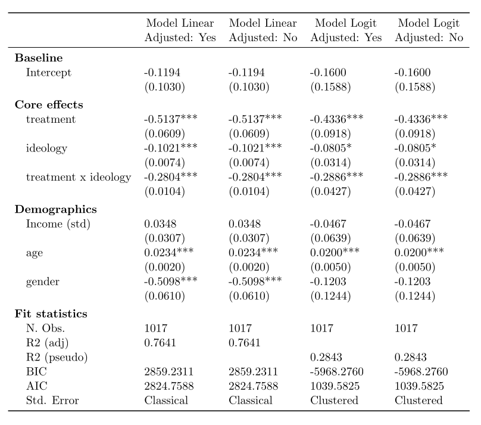

Regression Table
Motivating example
Regression tables with multiple models displayed in the table columns are common in academic publications, and they usually follow the same standard format. The table below is an example from Fournier, Soroka, and Nir (2020) showing the effect of negative and positive televised news reports and political ideology on people's emotional arousal and activation, captured by physiological galvanic skin activity. It is easy to produce this type of table with tidypolars, keeping everything in a tidy format.

Data
The synthetic data vote contains information about Democratic and
Republican voters, including demographics and voting behavior:
import tidypolars4sci as tp
import tools4sci as t4
from tidypolars4sci.data import vote as df
import numpy as np
#
from statsmodels.formula.api import ols as lm
from statsmodels.formula.api import glm as glm
from statsmodels.api import families as family
# variables:
df.__codebook__.print()
shape: (9, 3)
┌──────────────────────────────────────────────────────────────────────────────────────────────────────────────────────────┐
│ Variable Type Description │
│ str str str │
╞══════════════════════════════════════════════════════════════════════════════════════════════════════════════════════════╡
│ age int Age │
│ income float Income (standardized) │
│ gender int Gender (Male=0; Female=1) │
│ ideology float Ideology self-placement (left=-10 to right=10) │
│ treatment int Treatment group (treated=1; control=0) │
│ group str Group │
│ partisanship str Partisanship (Democrat or Republican) │
│ vote_conservative int Voted for the most conservative in-party candidate (Yes=1, No=0) │
│ rate_conservative float Voters rate of the most conservative in-party candidate (Dislike=low value; Like=high value) │
└──────────────────────────────────────────────────────────────────────────────────────────────────────────────────────────┘
Estimating
Here are the functions for the estimation, prediction, and summarizing:
def create_formula(outcome, adjusted):
if adjusted:
# Adjustments are hard-coded here but could have been provided
# as arguments for the function instead.
adjustments = "income + age + gender"
else:
adjustments = "1"
formula = f"{outcome} ~ treatment * ideology + {adjustments}"
return formula
def estimate(data, model, formula):
# need to covert to pandas for statsmodels
data = data.to_pandas()
if model == 'Linear':
res = lm(formula, data=data).fit()
else:
# logit model with clustered std. errors by the variable 'group'
res = glm(formula, data=data, family=family.Binomial()).fit(cov_type="cluster",
cov_kwds={"groups": data["group"]})
return res
def get_summary(fit):
res = fit.summary2().tables[1].reset_index(drop=False, names='term')
return tp.from_pandas(res)
def predict(fit, data, at):
newdata = t4.simulate.newdata(data, at=at)
pred = fit.get_prediction(newdata.to_pandas()).summary_frame(alpha=0.05)
return newdata.bind_cols(tp.from_pandas(pred))
And here is how to run the estimation in tidypolars and produce a table with tidy results:
res = (df
.nest('partisanship')
.crossing(outcome = ['rate_conservative', "vote_conservative"],
adjusted = ['Yes', 'No'])
.mutate(
model = tp.case_when(tp.col("outcome").str.contains('rate'), 'Linear',
tp.col("outcome").str.contains('vote'), 'Logit'),
formula = tp.map(['outcome', 'adjusted'], lambda row: create_formula(*row)))
.mutate(
fit = tp.map(['data', 'model', 'formula'], lambda row: estimate(*row)),
summ = tp.map(["fit"], lambda fit: get_summary(*fit)),
pred = tp.map(["fit", "data"], lambda row: predict(*row,
at={'treatment':[0, 1],
'ideology':range(-10, 10)}))
)
)
res
# explanation:
# res = (df
# .nest('partisanship')
# # This expands the grouped data to estimate different models
# # (LPM and Logit), each with and without adjustment
# .crossing(outcome = ['rate_conservative', "vote_conservative"],
# adjusted = ['Yes', 'No'])
# .mutate(
# # this indicates with model will be estimated depending on
# # the outcome variable
# # rate_coservative: continuous => linear model
# # vote_coservative: binary => logit model
# model = tp.case_when(tp.col("outcome").str.contains('rate'), 'Linear',
# tp.col("outcome").str.contains('vote'), 'Logit'),
# # this performs a row-wise operation, creating the regression
# # formula depending on the outcome and if the estimation is
# # adjusted (the * used in *row unpacks the columns for the function)
# formula = tp.map(['outcome', 'adjusted'], lambda row: create_formula(*row)))
# .mutate(
# # fit the models
# fit = tp.map(['data', 'model', 'formula'], lambda row: estimate(*row)),
# # create tidy summaries
# summ = tp.map(["fit"], lambda fit: get_summary(*fit)),
# # create table with predicted values 'at' specified values
# pred = tp.map(["fit", "data"], lambda row: predict(*row,
# at={'treatment':[0, 1],
# 'ideology':range(-10, 10)}))
# )
# )
shape: (8, 9)
┌────────────────────────────────────────────────────────────────────────────────┐
│ parti… data outco… adjus… model formu… fit summ pred │
│ str object str str str str object object object │
╞════════════════════════════════════════════════════════════════════════════════╡
│ repub… shape… rate_… Yes Linea… rate_… <stat… shape… shape… │
│ repub… shape… rate_… No Linea… rate_… <stat… shape… shape… │
│ repub… shape… vote_… Yes Logit vote_… <stat… shape… shape… │
│ … … … … … … … … … │
│ democ… shape… rate_… No Linea… rate_… <stat… shape… shape… │
│ democ… shape… vote_… Yes Logit vote_… <stat… shape… shape… │
│ democ… shape… vote_… No Logit vote_… <stat… shape… shape… │
└────────────────────────────────────────────────────────────────────────────────┘
Summarizing
Single model
Let us see statmmodel summary the results for a particular model:
pty = 'democrat'
model = 'Logit'
adjusted = 'Yes'
tab = (res
.filter(tp.col("partisanship")==pty)
.filter(tp.col("model")==model)
.filter(tp.col("adjusted")==adjusted)
.pull('fit')
)
# result of the first model estimated
tab[0].summary()
Generalized Linear Model Regression Results
==============================================================================
Dep. Variable: vote_conservative No. Observations: 1017
Model: GLM Df Residuals: 1010
Model Family: Binomial Df Model: 6
Link Function: Logit Scale: 1.0000
Method: IRLS Log-Likelihood: -512.79
Date: Sun, 23 Feb 2025 Deviance: 1025.6
Time: 19:06:58 Pearson chi2: 1.02e+03
No. Iterations: 5 Pseudo R-squ. (CS): 0.2843
Covariance Type: cluster
======================================================================================
coef std err z P>|z| [0.025 0.975]
--------------------------------------------------------------------------------------
Intercept -0.1600 0.159 -1.008 0.314 -0.471 0.151
treatment -0.4336 0.092 -4.724 0.000 -0.613 -0.254
ideology -0.0805 0.031 -2.562 0.010 -0.142 -0.019
treatment:ideology -0.2886 0.043 -6.765 0.000 -0.372 -0.205
income -0.0467 0.064 -0.731 0.465 -0.172 0.079
age 0.0200 0.005 3.972 0.000 0.010 0.030
gender -0.1203 0.124 -0.967 0.333 -0.364 0.123
======================================================================================
Here is the tidy summary:
shape: (7, 7)
┌─────────────────────────────────────────────────────────────────────────┐
│ term Coef. Std.Err. z P>|z| [0.025 0.975] │
│ str f64 f64 f64 f64 f64 f64 │
╞═════════════════════════════════════════════════════════════════════════╡
│ Intercept -0.16 0.16 -1.01 0.31 -0.47 0.15 │
│ treatment -0.43 0.09 -4.72 0.00 -0.61 -0.25 │
│ ideology -0.08 0.03 -2.56 0.01 -0.14 -0.02 │
│ treatment:ideology -0.29 0.04 -6.76 0.00 -0.37 -0.20 │
│ income -0.05 0.06 -0.73 0.46 -0.17 0.08 │
│ age 0.02 0.01 3.97 0.00 0.01 0.03 │
│ gender -0.12 0.12 -0.97 0.33 -0.36 0.12 │
└─────────────────────────────────────────────────────────────────────────┘
Multiple models
To create a regression table with different models displayed in the
columns, formatted for publication, we can use the function
models2tab() from the model tools4sci. One of the outcomes will be a
tibble with the models (tab), the other a string with the latex
table (tabl). The function uses a dictionary with the estimated
models. The keys are the column names. Line breaks with \n can be
used.
# select the models that will show in the table
mods = res.filter(tp.col("partisanship")=='democrat')
# prepare the dictionary (keys will be column names)
mods = {f"Model {m}\nAdjusted: {a}" : fit
for m, a, fit in zip(mods.pull('model'),
mods.pull('adjusted'),
mods.pull('fit'))
}
mods
# from the tools4sci module
tab, tabl = t4.report.models2tab(mods,
latex=True,
# we can rename covariates
covar_labels={"income": "Income (std)"},
kws_latex={'caption': "Example table",
'label': "tab-example",
'header':None,
'align':"lcccc",
'escape':True,
'longtable':False,
'rotate':False
},
sanitize='partial'
)
# here is the tidy table (one can save it in xlsx, or csv)
tab.print()
shape: (20, 5)
┌────────────────────────────────────────────────────────────────────────────────────┐
│ Model Linear Model Linear Model Logit Model Logit │
│ str Adjusted: Yes Adjusted: No Adjusted: Yes Adjusted: No │
│ str str str str │
╞════════════════════════════════════════════════════════════════════════════════════╡
│ Intercept -0.1194 -0.1194 -0.1600 -0.1600 │
│ (0.1030) (0.1030) (0.1588) (0.1588) │
│ treatment -0.5137*** -0.5137*** -0.4336*** -0.4336*** │
│ (0.0609) (0.0609) (0.0918) (0.0918) │
│ ideology -0.1021*** -0.1021*** -0.0805* -0.0805* │
│ (0.0074) (0.0074) (0.0314) (0.0314) │
│ treatment x ideology -0.2804*** -0.2804*** -0.2886*** -0.2886*** │
│ (0.0104) (0.0104) (0.0427) (0.0427) │
│ Income (std) 0.0348 0.0348 -0.0467 -0.0467 │
│ (0.0307) (0.0307) (0.0639) (0.0639) │
│ age 0.0234*** 0.0234*** 0.0200*** 0.0200*** │
│ (0.0020) (0.0020) (0.0050) (0.0050) │
│ gender -0.5098*** -0.5098*** -0.1203 -0.1203 │
│ (0.0610) (0.0610) (0.1244) (0.1244) │
│ N. Obs. 1017 1017 1017 1017 │
│ R2 (adj) 0.7641 0.7641 │
│ R2 (pseudo) 0.2843 0.2843 │
│ BIC 2859.2311 2859.2311 -5968.2760 -5968.2760 │
│ AIC 2824.7588 2824.7588 1039.5825 1039.5825 │
│ Std. Error Classical Classical Clustered Clustered │
└────────────────────────────────────────────────────────────────────────────────────┘
And here is the latex version (note the footnote with p-values; it can
be changed using the parameter footnote of the function
t4.report.models2tab() of the tools4sci module):
\begin{table}[!htb]
\caption{Example table}
\label{tab-example}
\centering
\resizebox{\ifdim\width>\linewidth\linewidth\else\width\fi}{!}{
\begin{tabular}{lcccc}
\toprule
& \makecell{Model Linear\\Adjusted: Yes} & \makecell{Model Linear\\Adjusted: No} & \makecell{Model Logit\\Adjusted: Yes} & \makecell{Model Logit\\Adjusted: No}\\
\midrule
Intercept & -0.1194 & -0.1194 & -0.1600 & -0.1600 \\
& (0.1030) & (0.1030) & (0.1588) & (0.1588) \\
treatment & -0.5137*** & -0.5137*** & -0.4336*** & -0.4336*** \\
& (0.0609) & (0.0609) & (0.0918) & (0.0918) \\
ideology & -0.1021*** & -0.1021*** & -0.0805* & -0.0805* \\
& (0.0074) & (0.0074) & (0.0314) & (0.0314) \\
treatment x ideology & -0.2804*** & -0.2804*** & -0.2886*** & -0.2886*** \\
& (0.0104) & (0.0104) & (0.0427) & (0.0427) \\
Income (std) & 0.0348 & 0.0348 & -0.0467 & -0.0467 \\
& (0.0307) & (0.0307) & (0.0639) & (0.0639) \\
age & 0.0234*** & 0.0234*** & 0.0200*** & 0.0200*** \\
& (0.0020) & (0.0020) & (0.0050) & (0.0050) \\
gender & -0.5098*** & -0.5098*** & -0.1203 & -0.1203 \\
& (0.0610) & (0.0610) & (0.1244) & (0.1244) \\
N. Obs. & 1017 & 1017 & 1017 & 1017 \\
R2 (adj) & 0.7641 & 0.7641 & & \\
R2 (pseudo) & & & 0.2843 & 0.2843 \\
BIC & 2859.2311 & 2859.2311 & -5968.2760 & -5968.2760 \\
AIC & 2824.7588 & 2824.7588 & 1039.5825 & 1039.5825 \\
Std. Error & Classical & Classical & Clustered & Clustered \\
\bottomrule
\multicolumn{5}{r}{+ $p<0.1$; * $p<0.05$; ** $p<0.01$; *** $p<0.001$}\\
\end{tabular}}
\end{table}

Bonus
Grouping rows
We can group the rows in the table by post-processing the tibble
outcome from the models2tab() function using tidypolars
function to_latex(). Something like this:

We need to create a column indicating the row group:
tab_rows_grouped = tab.mutate(groups = np.array(['Baseline']*2 +
['Core effects']*6 +
['Demographics']*6 +
['Fit statistics']*6
)
)
tab_rows_grouped.print()
shape: (20, 6)
┌─────────────────────────────────────────────────────────────────────────────────────────────────────┐
│ Model Linear Model Linear Model Logit Model Logit groups │
│ str Adjusted: Yes Adjusted: No Adjusted: Yes Adjusted: No str │
│ str str str str │
╞═════════════════════════════════════════════════════════════════════════════════════════════════════╡
│ Intercept -0.1194 -0.1194 -0.1600 -0.1600 Baseline │
│ (0.1030) (0.1030) (0.1588) (0.1588) Baseline │
│ treatment -0.5137*** -0.5137*** -0.4336*** -0.4336*** Core effects │
│ (0.0609) (0.0609) (0.0918) (0.0918) Core effects │
│ ideology -0.1021*** -0.1021*** -0.0805* -0.0805* Core effects │
│ (0.0074) (0.0074) (0.0314) (0.0314) Core effects │
│ treatment x ideology -0.2804*** -0.2804*** -0.2886*** -0.2886*** Core effects │
│ (0.0104) (0.0104) (0.0427) (0.0427) Core effects │
│ Income (std) 0.0348 0.0348 -0.0467 -0.0467 Demographics │
│ (0.0307) (0.0307) (0.0639) (0.0639) Demographics │
│ age 0.0234*** 0.0234*** 0.0200*** 0.0200*** Demographics │
│ (0.0020) (0.0020) (0.0050) (0.0050) Demographics │
│ gender -0.5098*** -0.5098*** -0.1203 -0.1203 Demographics │
│ (0.0610) (0.0610) (0.1244) (0.1244) Demographics │
│ N. Obs. 1017 1017 1017 1017 Fit statistics │
│ R2 (adj) 0.7641 0.7641 Fit statistics │
│ R2 (pseudo) 0.2843 0.2843 Fit statistics │
│ BIC 2859.2311 2859.2311 -5968.2760 -5968.2760 Fit statistics │
│ AIC 2824.7588 2824.7588 1039.5825 1039.5825 Fit statistics │
│ Std. Error Classical Classical Clustered Clustered Fit statistics │
└─────────────────────────────────────────────────────────────────────────────────────────────────────┘
Then, we apply the to_latex() function:
\begin{table}[!htb]
\centering
\resizebox{\ifdim\width>\linewidth\linewidth\else\width\fi}{!}{
\begin{tabular}{lllll}
\toprule
& \makecell{Model Linear\\Adjusted: Yes} & \makecell{Model Linear\\Adjusted: No} & \makecell{Model Logit\\Adjusted: Yes} & \makecell{Model Logit\\Adjusted: No}\\
\midrule
\addlinespace[0.3em]\multicolumn{5}{l}{ \textbf{Baseline} }\\
\hspace{1em}Intercept & -0.1194 & -0.1194 & -0.1600 & -0.1600 \\
\hspace{1em} & (0.1030) & (0.1030) & (0.1588) & (0.1588) \\
\addlinespace[0.3em]\multicolumn{5}{l}{ \textbf{Core effects} }\\
\hspace{1em}treatment & -0.5137*** & -0.5137*** & -0.4336*** & -0.4336*** \\
\hspace{1em} & (0.0609) & (0.0609) & (0.0918) & (0.0918) \\
\hspace{1em}ideology & -0.1021*** & -0.1021*** & -0.0805* & -0.0805* \\
\hspace{1em} & (0.0074) & (0.0074) & (0.0314) & (0.0314) \\
\hspace{1em}treatment x ideology & -0.2804*** & -0.2804*** & -0.2886*** & -0.2886*** \\
\hspace{1em} & (0.0104) & (0.0104) & (0.0427) & (0.0427) \\
\addlinespace[0.3em]\multicolumn{5}{l}{ \textbf{Demographics} }\\
\hspace{1em}Income (std) & 0.0348 & 0.0348 & -0.0467 & -0.0467 \\
\hspace{1em} & (0.0307) & (0.0307) & (0.0639) & (0.0639) \\
\hspace{1em}age & 0.0234*** & 0.0234*** & 0.0200*** & 0.0200*** \\
\hspace{1em} & (0.0020) & (0.0020) & (0.0050) & (0.0050) \\
\hspace{1em}gender & -0.5098*** & -0.5098*** & -0.1203 & -0.1203 \\
\hspace{1em} & (0.0610) & (0.0610) & (0.1244) & (0.1244) \\
\addlinespace[0.3em]\multicolumn{5}{l}{ \textbf{Fit statistics} }\\
\hspace{1em}N. Obs. & 1017 & 1017 & 1017 & 1017 \\
\hspace{1em}R2 (adj) & 0.7641 & 0.7641 & & \\
\hspace{1em}R2 (pseudo) & & & 0.2843 & 0.2843 \\
\hspace{1em}BIC & 2859.2311 & 2859.2311 & -5968.2760 & -5968.2760 \\
\hspace{1em}AIC & 2824.7588 & 2824.7588 & 1039.5825 & 1039.5825 \\
\hspace{1em}Std. Error & Classical & Classical & Clustered & Clustered \\
\bottomrule
\end{tabular}}
\end{table}
Grouping columns
We can also group columns instead, producing something like this:

We need to post-process the tibble outcome from the models2tab()
function using tidypolars function to_latex(). The code:
caption = "A regression table"
label = 'tab-regression'
header = [('', ''),
('Linear Models', 'Adjusted: Yes'),
('Linear Models', 'Adjusted: No'),
('Logit Models', 'Adjusted: Yes'),
('Logit Models', 'Adjusted: No'),
]
tabl = tab.to_latex(caption = caption,
label = label,
header = header,
align = 'lcccc',
footnotes = None)
print(tabl)
\begin{table}[!htb]
\caption{A regression table}
\label{tab-regression}
\centering
\resizebox{\ifdim\width>\linewidth\linewidth\else\width\fi}{!}{
\begin{tabular}{lcccc}
\toprule
& \multicolumn{2}{c}{Linear Models} & \multicolumn{2}{c}{Logit Models} \\
\cmidrule(lr){2-3} \cmidrule(lr){4-5}
& Adjusted: Yes & Adjusted: No & Adjusted: Yes & Adjusted: No \\
\midrule
Intercept & -0.1194 & -0.1194 & -0.1600 & -0.1600 \\
& (0.1030) & (0.1030) & (0.1588) & (0.1588) \\
treatment & -0.5137*** & -0.5137*** & -0.4336*** & -0.4336*** \\
& (0.0609) & (0.0609) & (0.0918) & (0.0918) \\
ideology & -0.1021*** & -0.1021*** & -0.0805* & -0.0805* \\
& (0.0074) & (0.0074) & (0.0314) & (0.0314) \\
treatment x ideology & -0.2804*** & -0.2804*** & -0.2886*** & -0.2886*** \\
& (0.0104) & (0.0104) & (0.0427) & (0.0427) \\
Income (std) & 0.0348 & 0.0348 & -0.0467 & -0.0467 \\
& (0.0307) & (0.0307) & (0.0639) & (0.0639) \\
age & 0.0234*** & 0.0234*** & 0.0200*** & 0.0200*** \\
& (0.0020) & (0.0020) & (0.0050) & (0.0050) \\
gender & -0.5098*** & -0.5098*** & -0.1203 & -0.1203 \\
& (0.0610) & (0.0610) & (0.1244) & (0.1244) \\
N. Obs. & 1017 & 1017 & 1017 & 1017 \\
R2 (adj) & 0.7641 & 0.7641 & & \\
R2 (pseudo) & & & 0.2843 & 0.2843 \\
BIC & 2859.2311 & 2859.2311 & -5968.2760 & -5968.2760 \\
AIC & 2824.7588 & 2824.7588 & 1039.5825 & 1039.5825 \\
Std. Error & Classical & Classical & Clustered & Clustered \\
\bottomrule
\end{tabular}}
\end{table}
Plotting coefficients
The tidy format facilitates plotting the model coefficients. One can use
the unnest() function. Here is the code:
model = 'Linear'
adjusted = 'Yes'
tab = (res
.filter(tp.col("model")==model)
.filter(tp.col("adjusted")==adjusted)
.select('partisanship', 'summ')
.unnest('summ')
#
.filter(~tp.col("term").str.contains('Intercept'))
)
tab.print()
shape: (12, 8)
┌─────────────────────────────────────────────────────────────────────────────────────────┐
│ partisanship term Coef. Std.Err. t P>|t| [0.025 0.975] │
│ str str f64 f64 f64 f64 f64 f64 │
╞═════════════════════════════════════════════════════════════════════════════════════════╡
│ republican treatment -0.55 0.07 -8.35 0.00 -0.67 -0.42 │
│ republican ideology -0.12 0.01 -14.41 0.00 -0.13 -0.10 │
│ republican treatment:ideology -0.29 0.01 -25.66 0.00 -0.31 -0.27 │
│ republican income -0.01 0.03 -0.25 0.81 -0.07 0.06 │
│ republican age 0.02 0.00 7.81 0.00 0.01 0.02 │
│ republican gender -0.44 0.07 -6.76 0.00 -0.57 -0.31 │
│ democrat treatment -0.51 0.06 -8.44 0.00 -0.63 -0.39 │
│ democrat ideology -0.10 0.01 -13.86 0.00 -0.12 -0.09 │
│ democrat treatment:ideology -0.28 0.01 -27.00 0.00 -0.30 -0.26 │
│ democrat income 0.03 0.03 1.13 0.26 -0.03 0.10 │
│ democrat age 0.02 0.00 11.58 0.00 0.02 0.03 │
│ democrat gender -0.51 0.06 -8.36 0.00 -0.63 -0.39 │
└─────────────────────────────────────────────────────────────────────────────────────────┘
Plotting fitted line
The tidy format facilitates plotting the model prediction or fitted
values. One can use the unnest() function. Here is the code:
model = 'Linear'
adjusted = 'Yes'
tab = (res
.filter(tp.col("model")==model)
.filter(tp.col("adjusted")==adjusted)
.select('partisanship', "pred")
.unnest("pred")
)
tab.print()
shape: (80, 15)
┌───────────────────────────────────────────────────────────────────────────────────────────────────────────────────────────────────────────────────────────────────────────────────────────────┐
│ partisanship age income gender ideology treatment group vote_conservative rate_conservative mean mean_se mean_ci_lower mean_ci_upper obs_ci_lower obs_ci_upper │
│ str f64 f64 f64 i64 i64 str f64 f64 f64 f64 f64 f64 f64 f64 │
╞═══════════════════════════════════════════════════════════════════════════════════════════════════════════════════════════════════════════════════════════════════════════════════════════════╡
│ republican 43.92 -0.04 0.49 -10 0 a 0.59 0.46 1.81 0.09 1.64 1.98 -0.19 3.82 │
│ republican 43.92 -0.04 0.49 -9 0 a 0.59 0.46 1.70 0.08 1.54 1.85 -0.31 3.70 │
│ republican 43.92 -0.04 0.49 -8 0 a 0.59 0.46 1.58 0.07 1.43 1.73 -0.42 3.58 │
│ republican 43.92 -0.04 0.49 -7 0 a 0.59 0.46 1.46 0.07 1.33 1.60 -0.54 3.46 │
│ republican 43.92 -0.04 0.49 -6 0 a 0.59 0.46 1.35 0.06 1.22 1.47 -0.66 3.35 │
│ republican 43.92 -0.04 0.49 -5 0 a 0.59 0.46 1.23 0.06 1.12 1.34 -0.77 3.23 │
│ republican 43.92 -0.04 0.49 -4 0 a 0.59 0.46 1.11 0.05 1.01 1.22 -0.89 3.11 │
│ republican 43.92 -0.04 0.49 -3 0 a 0.59 0.46 1.00 0.05 0.90 1.09 -1.00 3.00 │
│ republican 43.92 -0.04 0.49 -2 0 a 0.59 0.46 0.88 0.05 0.79 0.97 -1.12 2.88 │
│ republican 43.92 -0.04 0.49 -1 0 a 0.59 0.46 0.76 0.05 0.67 0.85 -1.24 2.76 │
│ republican 43.92 -0.04 0.49 0 0 a 0.59 0.46 0.65 0.05 0.55 0.74 -1.35 2.65 │
│ republican 43.92 -0.04 0.49 1 0 a 0.59 0.46 0.53 0.05 0.43 0.62 -1.47 2.53 │
│ republican 43.92 -0.04 0.49 2 0 a 0.59 0.46 0.41 0.05 0.31 0.51 -1.59 2.41 │
│ republican 43.92 -0.04 0.49 3 0 a 0.59 0.46 0.30 0.06 0.19 0.40 -1.71 2.30 │
│ republican 43.92 -0.04 0.49 4 0 a 0.59 0.46 0.18 0.06 0.06 0.30 -1.82 2.18 │
│ republican 43.92 -0.04 0.49 5 0 a 0.59 0.46 0.06 0.07 -0.07 0.19 -1.94 2.06 │
│ republican 43.92 -0.04 0.49 6 0 a 0.59 0.46 -0.05 0.07 -0.20 0.09 -2.06 1.95 │
│ republican 43.92 -0.04 0.49 7 0 a 0.59 0.46 -0.17 0.08 -0.32 -0.02 -2.17 1.83 │
│ republican 43.92 -0.04 0.49 8 0 a 0.59 0.46 -0.29 0.08 -0.45 -0.12 -2.29 1.72 │
│ republican 43.92 -0.04 0.49 9 0 a 0.59 0.46 -0.41 0.09 -0.59 -0.23 -2.41 1.60 │
│ republican 43.92 -0.04 0.49 -10 1 a 0.59 0.46 4.15 0.09 3.97 4.32 2.14 6.15 │
│ republican 43.92 -0.04 0.49 -9 1 a 0.59 0.46 3.74 0.08 3.58 3.90 1.74 5.75 │
│ republican 43.92 -0.04 0.49 -8 1 a 0.59 0.46 3.34 0.08 3.19 3.49 1.34 5.34 │
│ republican 43.92 -0.04 0.49 -7 1 a 0.59 0.46 2.93 0.07 2.80 3.07 0.93 4.94 │
│ republican 43.92 -0.04 0.49 -6 1 a 0.59 0.46 2.53 0.06 2.40 2.65 0.53 4.53 │
│ republican 43.92 -0.04 0.49 -5 1 a 0.59 0.46 2.12 0.06 2.01 2.24 0.12 4.12 │
│ republican 43.92 -0.04 0.49 -4 1 a 0.59 0.46 1.72 0.05 1.61 1.83 -0.28 3.72 │
│ republican 43.92 -0.04 0.49 -3 1 a 0.59 0.46 1.31 0.05 1.22 1.41 -0.69 3.31 │
│ republican 43.92 -0.04 0.49 -2 1 a 0.59 0.46 0.91 0.05 0.82 1.00 -1.09 2.91 │
│ republican 43.92 -0.04 0.49 -1 1 a 0.59 0.46 0.50 0.05 0.41 0.60 -1.49 2.50 │
│ republican 43.92 -0.04 0.49 0 1 a 0.59 0.46 0.10 0.05 0.01 0.19 -1.90 2.10 │
│ republican 43.92 -0.04 0.49 1 1 a 0.59 0.46 -0.30 0.05 -0.40 -0.21 -2.30 1.69 │
│ republican 43.92 -0.04 0.49 2 1 a 0.59 0.46 -0.71 0.05 -0.81 -0.61 -2.71 1.29 │
│ republican 43.92 -0.04 0.49 3 1 a 0.59 0.46 -1.11 0.05 -1.22 -1.01 -3.11 0.89 │
│ republican 43.92 -0.04 0.49 4 1 a 0.59 0.46 -1.52 0.06 -1.63 -1.41 -3.52 0.48 │
│ republican 43.92 -0.04 0.49 5 1 a 0.59 0.46 -1.92 0.06 -2.04 -1.80 -3.92 0.08 │
│ republican 43.92 -0.04 0.49 6 1 a 0.59 0.46 -2.33 0.07 -2.46 -2.20 -4.33 -0.33 │
│ republican 43.92 -0.04 0.49 7 1 a 0.59 0.46 -2.73 0.07 -2.88 -2.59 -4.74 -0.73 │
│ republican 43.92 -0.04 0.49 8 1 a 0.59 0.46 -3.14 0.08 -3.29 -2.98 -5.14 -1.14 │
│ republican 43.92 -0.04 0.49 9 1 a 0.59 0.46 -3.54 0.08 -3.71 -3.38 -5.55 -1.54 │
│ democrat 43.49 0.00 0.48 -10 0 a 0.60 0.50 1.67 0.09 1.50 1.84 -0.23 3.58 │
│ democrat 43.49 0.00 0.48 -9 0 a 0.60 0.50 1.57 0.08 1.41 1.73 -0.33 3.47 │
│ democrat 43.49 0.00 0.48 -8 0 a 0.60 0.50 1.47 0.07 1.32 1.61 -0.44 3.37 │
│ democrat 43.49 0.00 0.48 -7 0 a 0.60 0.50 1.37 0.07 1.23 1.50 -0.54 3.27 │
│ democrat 43.49 0.00 0.48 -6 0 a 0.60 0.50 1.26 0.06 1.14 1.39 -0.64 3.16 │
│ democrat 43.49 0.00 0.48 -5 0 a 0.60 0.50 1.16 0.06 1.05 1.27 -0.74 3.06 │
│ democrat 43.49 0.00 0.48 -4 0 a 0.60 0.50 1.06 0.05 0.96 1.16 -0.84 2.96 │
│ democrat 43.49 0.00 0.48 -3 0 a 0.60 0.50 0.96 0.05 0.86 1.05 -0.94 2.86 │
│ democrat 43.49 0.00 0.48 -2 0 a 0.60 0.50 0.85 0.05 0.77 0.94 -1.04 2.75 │
│ democrat 43.49 0.00 0.48 -1 0 a 0.60 0.50 0.75 0.04 0.67 0.84 -1.15 2.65 │
│ democrat 43.49 0.00 0.48 0 0 a 0.60 0.50 0.65 0.04 0.57 0.74 -1.25 2.55 │
│ democrat 43.49 0.00 0.48 1 0 a 0.60 0.50 0.55 0.04 0.46 0.63 -1.35 2.45 │
│ democrat 43.49 0.00 0.48 2 0 a 0.60 0.50 0.45 0.05 0.36 0.54 -1.45 2.35 │
│ democrat 43.49 0.00 0.48 3 0 a 0.60 0.50 0.34 0.05 0.25 0.44 -1.56 2.24 │
│ democrat 43.49 0.00 0.48 4 0 a 0.60 0.50 0.24 0.05 0.14 0.34 -1.66 2.14 │
│ democrat 43.49 0.00 0.48 5 0 a 0.60 0.50 0.14 0.06 0.03 0.25 -1.76 2.04 │
│ democrat 43.49 0.00 0.48 6 0 a 0.60 0.50 0.04 0.06 -0.08 0.16 -1.86 1.94 │
│ democrat 43.49 0.00 0.48 7 0 a 0.60 0.50 -0.06 0.07 -0.20 0.07 -1.97 1.84 │
│ democrat 43.49 0.00 0.48 8 0 a 0.60 0.50 -0.17 0.07 -0.31 -0.02 -2.07 1.74 │
│ democrat 43.49 0.00 0.48 9 0 a 0.60 0.50 -0.27 0.08 -0.42 -0.11 -2.17 1.64 │
│ democrat 43.49 0.00 0.48 -10 1 a 0.60 0.50 3.96 0.08 3.80 4.12 2.06 5.87 │
│ democrat 43.49 0.00 0.48 -9 1 a 0.60 0.50 3.58 0.07 3.43 3.73 1.68 5.48 │
│ democrat 43.49 0.00 0.48 -8 1 a 0.60 0.50 3.20 0.07 3.06 3.33 1.29 5.10 │
│ democrat 43.49 0.00 0.48 -7 1 a 0.60 0.50 2.81 0.06 2.69 2.94 0.91 4.72 │
│ democrat 43.49 0.00 0.48 -6 1 a 0.60 0.50 2.43 0.06 2.32 2.55 0.53 4.33 │
│ democrat 43.49 0.00 0.48 -5 1 a 0.60 0.50 2.05 0.05 1.94 2.15 0.15 3.95 │
│ democrat 43.49 0.00 0.48 -4 1 a 0.60 0.50 1.67 0.05 1.57 1.76 -0.23 3.57 │
│ democrat 43.49 0.00 0.48 -3 1 a 0.60 0.50 1.28 0.05 1.19 1.38 -0.62 3.18 │
│ democrat 43.49 0.00 0.48 -2 1 a 0.60 0.50 0.90 0.04 0.82 0.99 -1.00 2.80 │
│ democrat 43.49 0.00 0.48 -1 1 a 0.60 0.50 0.52 0.04 0.44 0.60 -1.38 2.42 │
│ democrat 43.49 0.00 0.48 0 1 a 0.60 0.50 0.14 0.04 0.05 0.22 -1.76 2.04 │
│ democrat 43.49 0.00 0.48 1 1 a 0.60 0.50 -0.25 0.04 -0.33 -0.16 -2.15 1.65 │
│ democrat 43.49 0.00 0.48 2 1 a 0.60 0.50 -0.63 0.05 -0.72 -0.54 -2.53 1.27 │
│ democrat 43.49 0.00 0.48 3 1 a 0.60 0.50 -1.01 0.05 -1.11 -0.91 -2.91 0.89 │
│ democrat 43.49 0.00 0.48 4 1 a 0.60 0.50 -1.39 0.05 -1.50 -1.29 -3.29 0.51 │
│ democrat 43.49 0.00 0.48 5 1 a 0.60 0.50 -1.78 0.06 -1.89 -1.66 -3.68 0.13 │
│ democrat 43.49 0.00 0.48 6 1 a 0.60 0.50 -2.16 0.06 -2.28 -2.03 -4.06 -0.26 │
│ democrat 43.49 0.00 0.48 7 1 a 0.60 0.50 -2.54 0.07 -2.68 -2.40 -4.44 -0.64 │
│ democrat 43.49 0.00 0.48 8 1 a 0.60 0.50 -2.92 0.08 -3.07 -2.77 -4.83 -1.02 │
│ democrat 43.49 0.00 0.48 9 1 a 0.60 0.50 -3.31 0.08 -3.47 -3.14 -5.21 -1.40 │
└───────────────────────────────────────────────────────────────────────────────────────────────────────────────────────────────────────────────────────────────────────────────────────────────┘
References
- Fournier, P., Soroka, S., & Nir, L. (2020). Negativity Biases and Political Ideology: A Comparative Test across 17 Countries. American Political Science Review, 114(3), 775–791. http://dx.doi.org/10.1017/S0003055420000131